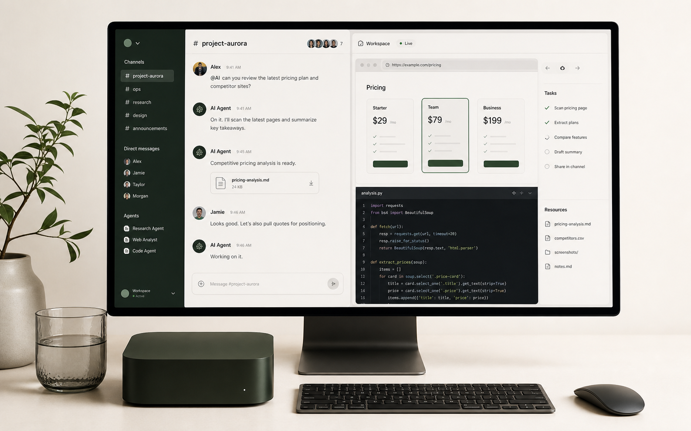

Launch room
Keep specs, product screens, browser sessions, and agent work in one shared machine while the team ships.
Shared computer for agentic teams
Otium is one persistent cloud computer for your team, your tools, and the agents moving work forward.
Request access
browser, files, terminal, channels, stateUse cases
Keep specs, product screens, browser sessions, and agent work in one shared machine while the team ships.
Let agents operate logged-in tools with the context your team has already prepared.
Mention Codex from the channel, watch the terminal and files, then take over without rebuilding the setup.
Give Claude, Codex, and teammates the same browser trail, notes, downloads, and working memory.
Inside the room
Opening soon